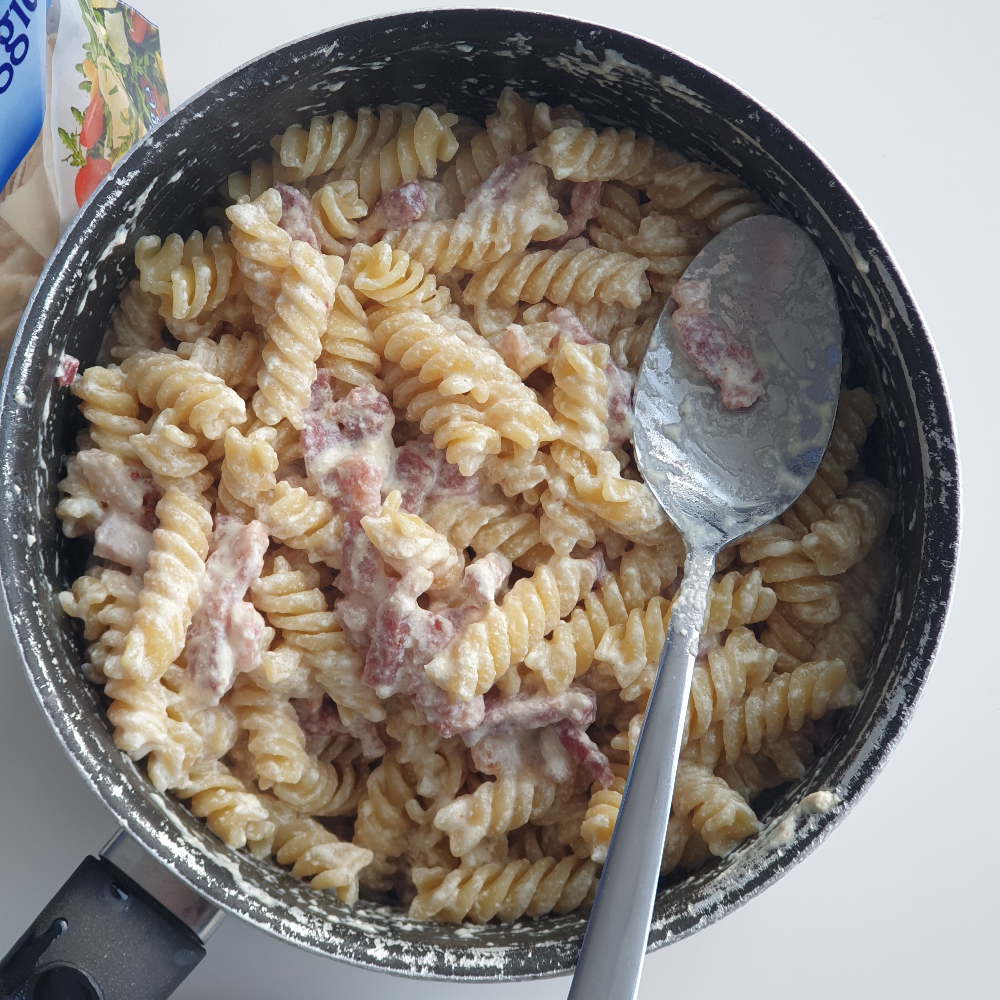

0001 - Pâtes Carbonara (A la Française)
15-20min
15-20min
Pour 👤👤
Difficulté: â
Prix: 🪙🪙
🱠Conservation
3j au réfrigérateur
♨ Peut-être réchauffé
❄️ Peut-être congelé
Ingrédients
Temps de préparation:
5min
Temps de repos:
---
Temps de cuisson:
10-15min
Temps total:
15-20min
Matériel nécessaire:
Recette:
🧑‍🍳 Conseil du ptit’chef :
Pas besoin de graisses pour les lardons car lorsqu’ils cuiront, la graisse de ceux-ci permettra de remplacer l’huile ou le beurre sans cramer le matériel !